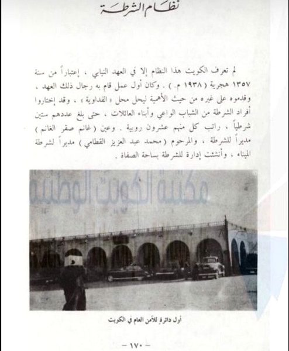

1357 AH (1938) · A page from a published book on the history of the Kuwait police, page 170
Mohammed Abdulaziz Al-Qatami, director of the port police, 1938
What it is
The page says Kuwait first organised a police force in 1357 AH (1938), choosing sixty young men of good families, and «appointed Ghanim Saqr Al-Ghanim director of the police and the late Mohammed Abdulaziz Al-Qatami director of the port police».
Why it matters
It records his public role in the year before he was killed.
Who is meant
Mohammed Abdulaziz Al-Qatami, killed in March 1939.
Page copies

Original text
لم تعرف الكويت هذا النظام إلا في العهد النيابي، إعتباراً من سنة ١٣٥٧ هجرية (١٩٣٨ م). وكان أول عمل قام به رجال ذلك العهد، وقدموه على غيره من حيث الأهمية ليحل محل «الفداوية»، وقد إختاروا أفراد الشرطة من الشباب الواعي وأبناء العائلات، حتى بلغ عددهم ستين شرطياً، راتب كل منهم عشرون روبية. وعين (غانم صقر الغانم) مديراً للشرطة، والمرحوم (محمد عبد العزيز القطامي) مديراً لشرطة الميناء، وأنشئت إدارة للشرطة بساحة الصفاة.
English translation
Kuwait did not know this system until the parliamentary period, starting in 1357 AH (1938). It was the first thing the men of that period did, and they put it before everything else, to replace the «fidawiya». They chose the policemen from aware young men and sons of the families, until there were sixty policemen, each paid twenty rupees. (Ghanim Saqr Al-Ghanim) was appointed director of the police, and the late (Mohammed Abdulaziz Al-Qatami) director of the port police, and a police headquarters was set up in Al-Safat Square.
Notes
A later published account, not the 1938 appointment itself. The book's title is still to be confirmed.
Others named
Ghanim Saqr Al-Ghanim
Sources
Page shared on Instagram, from a copy held by the National Library of Kuwait.
How this text was made: Quoted from the page.
Open in the interactive site